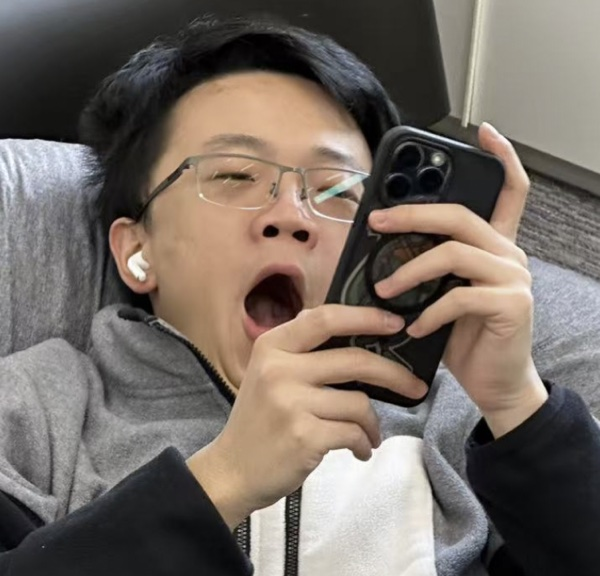

Electrical & Systems Engineering · Computer Science · Robotics
Hi, I’m Lucas Liu.
I recently graduated from New York University Shanghai with a background in Electrical and Systems Engineering and Computer Science. My next stop is a Ph.D. in Computer Science at NYU Courant, advised by Prof. Shengjie Wang.
I’m interested in robotics, embodied AI, and intelligent systems that connect perception, control, and interaction in the physical world. I’m currently exploring dexterous hands, robot manipulation, and AI-assisted engineering workflows.

Explore
Contact
Feel free to reach out if you want to talk about robotics, embodied AI, dexterous hands, robot manipulation, photography, games, or cats.